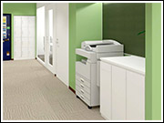

何も買う必要がない！｜個室のレンタルオフィスならOpenoffice：東京・大阪をはじめ全国に50拠点以上
- 【個室レンタルオフィス】オープンオフィス HOME
- オープンオフィスとは？
- 何も買う必要がない！
オープンオフィスとは？
- ■成功する起業家の条件：創業資金の有効活用
- ■起業時の【軍資金】がいかに大切か
- ■オープンオフィスの『保証金制度』
- ■オープンオフィスの『無人運営』とは？
- ■一坪オフィス実験
- ■立地・デザインについて
- ■共益費って？
- ■何も買う必要がない！
- ■オープンオフィスで過ごす「あなたの一日」
何も買う必要がない！
ここまで、お部屋そのものの立地や、広さ、そして料金のことを見てきました。
もちろんこれらは非常に大事なことですが、オフィスを構えるには、お部屋そのもの以外にも、本当にいろいろなものが必要です。
机はどうしよう？ コピー機は？ プリンタは？ インターネットは？
-
高速インターネット
-
Wi-Fi完備。オープンオフィスには、ブロードバンド対応のインターネット環境が備わっています。
新たにプロバイダに申込まなくても良い上、時間を気にせずに、光ファイバー専用線による100メガbpsの環境が利用できます。
※現在メールアドレスはご提供していません。 -
プリンター（カラー）
-
パソコンを持っていても、プリンタがないと物足りないですね。
オープンオフィスでは、カラープリンターをご用意しています。
インクジェットのプリンターはそれほど高いものではありませんが、印刷にかかるスピードは比較的遅いものです。
みなさんにカラーレーザープリンターを使っていただきたくて、LAN回線を使って共用で使う仕組みを開発しました。
料金はモノクロ、カラーともともに有料です。 これで、高速で印刷できて、綺麗な仕上がりのプリントが出来ます。
デザインやビジュアル関係の仕事の方にもとても喜ばれています。
使うみなさんには、最初に簡単な設定が必要です。（専用プリンタドライバーをパソコンにインストールします）。
設定が苦手な方は、スタッフによる出張サポートをお受けすることもできますので、お気軽にお申し付けください。 -
カラーコピー

オープンオフィスでは、最新のフルカラーコピー機が設置してあり、24時間お使い頂けます。
もちろんレーザーコピーです。2色印刷などの特殊機能も搭載しています。
料金はモノクロ・カラーともに有料です。 専用のカードを差し込んで複写します。
枚数は機械がカウントします。
毎月のオフィス利用料と合わせてのご請求となります。つまり現金・小銭はいりません！
100円玉や500円玉を持って、コンビニやビジネスコンビニで順番を待ってコピーする場合を想像して下さい。
後ろに並ばれたら、あまり長く使えないですし…。その都度、現金払いですね。
1階に降りて外に出なくていいだけでも、大きく違うと思いませんか？
今は会社のコピー機を使っているという方は、あまり考えたことがないかもしれません。
自分でオフィスを構える場合は、一枚コピーするにもお金が必要ですし、コピー機の導入や維持管理も
大変です。そしてコピー機が遠いほど、ビジネス上の、タイムロスになります。
この差を想像してみて下さい。-
デスクセット
-
オープンオフィスでは、すぐにも仕事が始められるように、 必要なデスクセット、家具はすべて備え付けです。
購入の必要はありません。翌日パソコン1台からでもオフィスにて仕事ができる環境です。
・・・つまり、ビジネスに必要なものが、最初から準備されています。
しかも、窓口は「オープンオフィス」一つでいいのです。
これで、仕事にスタートダッシュをかけられますね。
＊ ＊ ＊ ＊ ＊
何が必要か？ と常に考えているオープンオフィスですので、
これらの設備面だけではなく、起業開業に不可欠なサービスも充実しているのです。
次はそんなサービスをご覧に入れましょう。